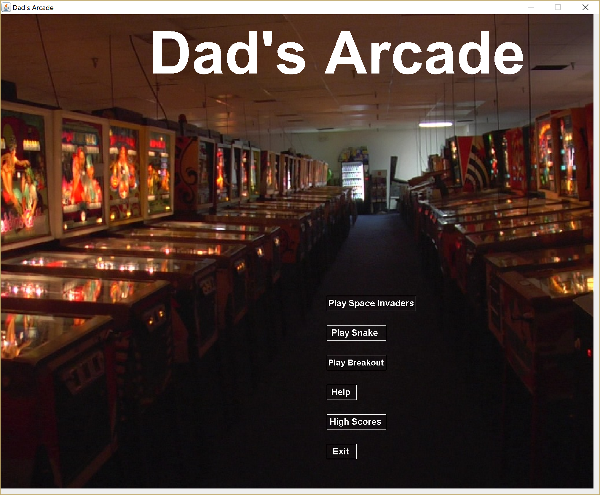

Use
Dad's Arcade is a Java application including the games Space Invaders and Snake. It was created as a gift for my dad.
System Architecture
The system architecture is a 3 Tier Architecture: 1. View - everything the user can see (menus, interactive games) 2. Business Logic - coordinates the application, runs the game algorithms/logic 3. Data - database where high scores are stored (file system)
Observer Pattern
I'm most proud of how I implemented the Observer Pattern. The observer pattern defines a one-to-many dependency between objects so that one object changes state, all its dependents are notified and updated automatically. I used this to have my different games and menus be observers. I implemented the observer pattern before we learned about the State Pattern. The state patterns allows an object to alter its behavior when its internal state changes. The object will appear to change its class. Because I use the observer pattern to change the state of my program, I should be using the state pattern, but the observer pattern works as well.
 .
.
Class Diagram
 .
.
Screenshots of Arcade
Start Menu
.
Space Invaders
.
Space Invaders End Game Menu
.
Snake
.
Snake End Game Menu
.
High Scores
.